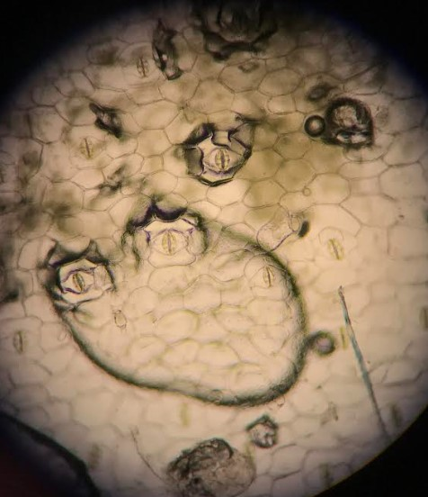

During my undergrad, I studied Environmental & Plant Biology and earned a Bachelor of Science from Ohio University. Go Bobcats! OU Oh Yeah!
There's more to botany then just memorizing the photosynthesis reaction and Krebs Cycle.
Stomata (singular: stoma) in plant anatomy is a pore on the surface of a plant's body. The function of this plant body part is to help with gas exchange of oxygen & carbon dioxide.
Pictured above is a sliced layer from a plant from a plant taxonomy lab course I took. The stomata have water droplets in them which makes them look like creepy eyes.
Happy Spooky Season!
In Botany, anything with seeds is considered a 'berry'.
You can watch a TikTok I made about the topic below.
@ jord_fran #botany #fruits #plants #plantsoftiktok #botanystudent #college #fyp #fypシ #education #science #sciencefunfacts #teachersoftiktok #biology motive x promiscuous - yea
Forget-Me-Nots, Myosotis scorpioides